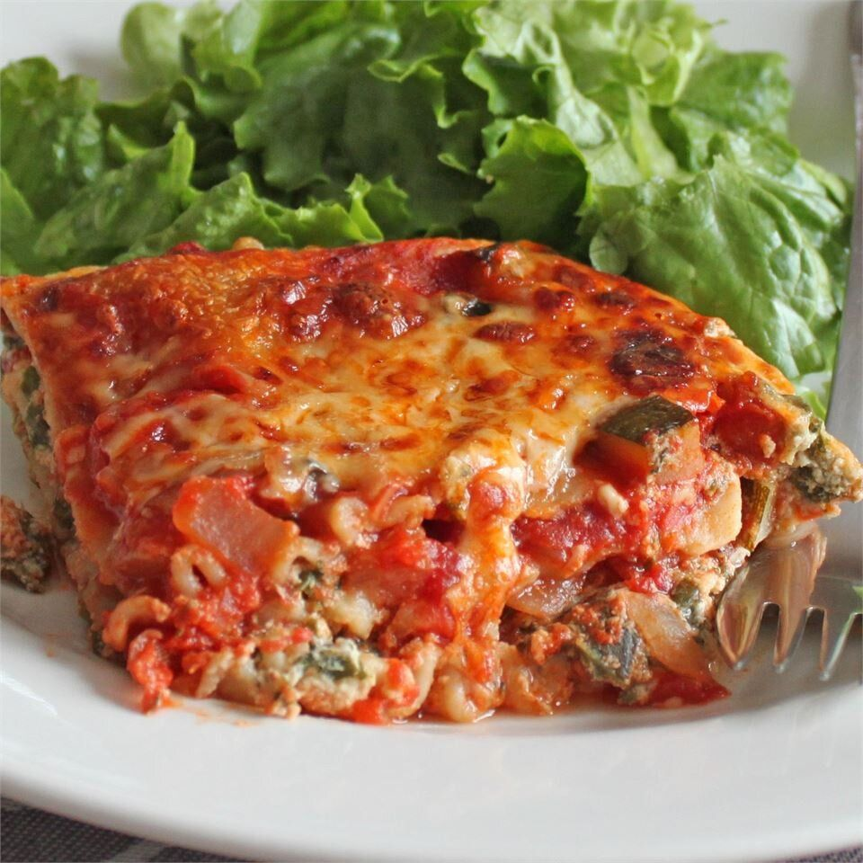

Meatless Monday Lasagna

Description
We are always looking for recipes to add to our Meatless Monday rotation. Bumping up the protein is important for
our 3 kids, so adding tofu to the cheese mixture of vegetarian lasagna works great. Use the excess tofu to make
a high-protein salad dressing.
Ingredients
- 1 (16 ounce) package dry lasagna noodles
- 3 tablespoons olive oil, divided
- 4 cups shredded part-skim mozzarella cheese, divided
- 1 (15 ounce) container part-skim ricotta cheese
- ½ cup shredded Parmesan cheese, divided
- 4 ounces silken tofu
- 2 large eggs
- 2 large carrots, shredded
- 2 medium zucchini, diced
- 1 medium yellow onion, diced
- 1 medium red bell pepper, diced
- 1 cup sliced portobello mushrooms
- 1 ½ (28 ounce) jars pasta sauce
- 4 ounces fresh baby spinach
Steps
- Preheat the oven to 375 degrees F (190 degrees C).
- Bring a large pot of lightly salted water to a boil. Cook lasagna noodles in the boiling water, stirring
occasionally, until tender yet firm to the bite, about 8 minutes. Drain and rinse with cold water. Toss with
1 tablespoon olive oil to prevent sticking and add flavor.
- Meanwhile, mix 2 cups mozzarella, ricotta, 1/2 cup Parmesan, tofu, and eggs together in a bowl. Combine
remaining mozzarella and Parmesan in a smaller bowl.
- While the noodles are cooking, heat remaining tablespoons olive oil in a skillet over medium-high heat. Add
carrots, zucchini, onion, bell pepper, and mushrooms; saute until tender, 5 to 7 minutes. Add pasta sauce
and spinach; simmer until sauce is heated through and spinach is wilted, about 3 minutes.
-
Cover the bottom of a 2-quart rectangular baking dish with a little of the vegetable sauce and arrange 1/2
of the lasagna noodles, overlapping slightly, over top. Layer with 1/2 of the cheese-tofu mixture over
noodles and 1/2 of the remaining sauce. Repeat layers with remaining noodles, cheese-tofu mixture, and
sauce. Top with mozzarella-Parmesan mixture.
- Bake, covered, in the preheated oven for 30 minutes. Uncover and bake until bubbly, about 20 minutes more.
Let stand for 10 minutes before slicing into 8 large squares and serving.